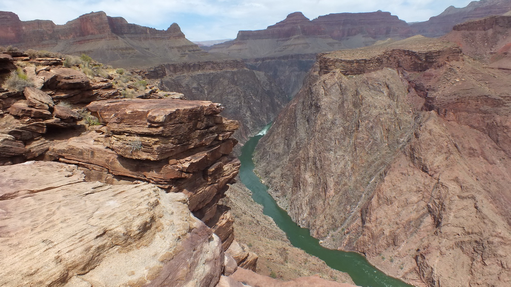
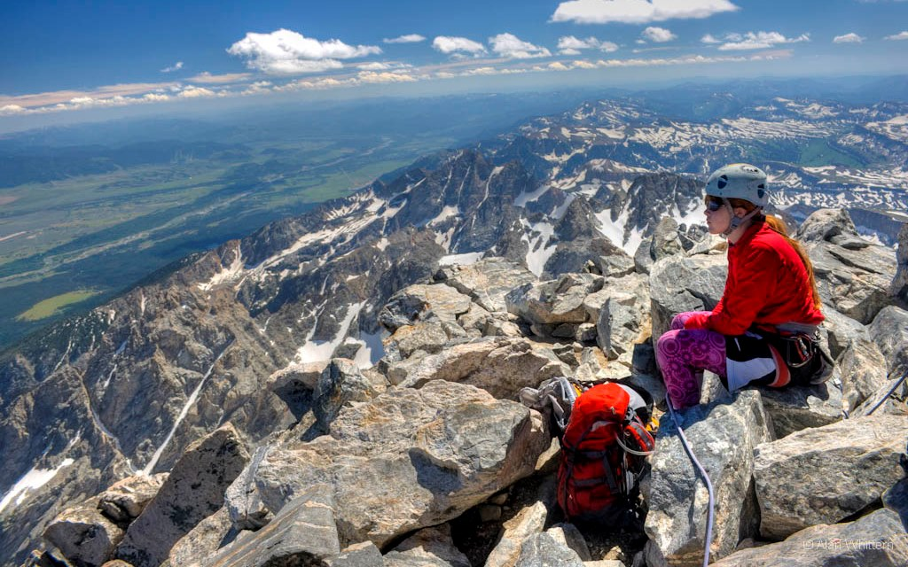

Great Viewpoints of the American West — The Rest of the West

Arizona views:
Pariah Plateau
Point Imperial
Cape Royal
Point Sublime
Monument Point
Kanab Point
Toroweap Overlook (and Vulcan’s Throne)
Mt. Trumbull
Snap Point
Powell Point
Kaibab Trail
Plateau Point
Desert View
Cape Solitude
Cedar Mesa & Red Butte
Mt. Humphries
Monument Valley views
Baldy Mountain
Mazatzal Mountain
Southern Arizona views
Colorado views:
Mt. Wilson
Blanca Peak
Crestone Peak
Mt. Lincoln
Pike’s Peak
Long’s Peak
Hague’s Peak
Zenobia Peak
Idaho views:
He Devil Mountain
Seven Devils Mtns. views
Mt. Borah
Montana views:
Glacier Park views
Great Chinese Wall views
Granite Mountain
Big Snowy Mountain
Outlier Mountain summits
Nevada views:
Granite Mountain (Black Rock)
Charleston Peak
Mummy Mountain
Wheeler Peak
Mt. Jefferson
Toiyabe Dome
Ruby Dome
Battle Mountain
New Mexico views:
Wheeler Peak
Sandia Mountain
Oregon views:
Mt. Hood
Columbia River Gorge Overlook
Three Sisters
Mt. Scott and Crater Lake Rim views
Wallowa Mountains summits
Steens Mountain
South Dakota views:
Harney Peak
Badlands Park views
Texas views:
Guadalupe Peak
Emory Peak
South Rim Trail (Big Bend Park)
Carmen Peak (across Rio Grande)
Utah views:
Mt. Timpanagos
Mt. Nebo
Pilot Peak
King’s Peak
Uinta Summit Plateau
Harper’s Corner
Top of Arches National Park
Tukunikivats
Dead Horse Point
Mesa Arch
Maze Overlookv
Panoramic Point (Canyonlands)
Mt. Ellen
Aquarius Plateau Rim views
Zion Canyon views (Observation Point)
Powell Point (Table Cliffs Plateau)
Bryce Canyon Rim views
Navajo Mountain
Brianhead & Cedar Breaks Rim
Goosenecks Overlook
Washington views:
Mt. Rainier
Mt. Baker
Glacier Peak
Mt. St. Helens
Mt. Adams
Mt. Olympus
Mt. Carrie
Other North Cascades views
Wyoming views:
Grand Teton
Mt. Sheridan (and other Yellowstone views)
Grand Canyon of the Yellowstone
Cloud Peak
Gannett Peak
Fremont Peak
Temple Mountain
Wind River Mountain

THE INNER GORGE FROM PLATEAU POINT SANGRE DE CRISTO RANGE FROM BLANCA PEAK MONTANA'S GREAT CHINESE WALL BLACK ROCK DESERT FROM GRANITE MOUNTAIN ANOTHER VIEW FROM SANDIA MOUNTAIN KIGER GORGE ON STEENS MOUNTAIN VIEW NORTH FROM HARNEY PEAK SOUTH RIM TRAIL IN BIG BEND NATIONAL PARK GLACIER PEAK FROM IMAGE LAKE CRATER AT TOP OF MT. RAINIER
VIEW SOUTH FROM GRAND TETON ON THE LIP OF LOWER YELLOWSTONE FALLS